前驱图
前驱图是一个有向无循环图，可记为 DAG，用于描述进程之间执行的先后顺序。
- 结点表示进程或程序段
- 有向边表示两个结点直接存在偏序或前趋关系
程序执行
程序顺序执行
一个较大的程序通常都由若干个程序段组成，程序在执行时必须按照某种先后次序逐个执行，仅当前一操作执行完后，才能执行后继操作。
程序并发执行
采用多道程序技术，将多个程序同时装入内存，使之并发运行。
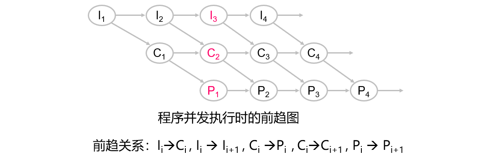
特征：
-
间断性
并发程序之间相互制约，执行——暂停执行——执行。
-
失去封闭性
多个程序共享全机资源，执行状态受外界因素影响。
-
不可再现性
程序经过多次执行后，虽然其执行时的环境和初始条件都相同，但得到的结果却各不相同。
进程
进程的概念和组成
在多道程序环境下，允许多个程序并发执行，此时它们将失去封闭性，并具有间断性及不可再现性的特征。
为此引入了进程(Process)的概念，以便更好地描述和控制程序的并发执行，实现操作系统的并发性和共享性（最基本的两个特性）。
进程控制块(PCB)
系统利用进程控制块(Process Control Block，PCB)来描述进程的基本情况和运行状态，进而控制和管理进程。
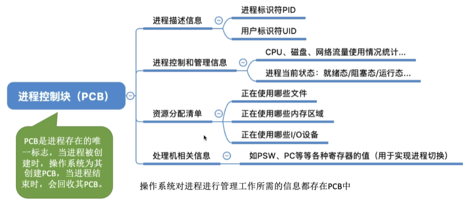
PCB 是进程存在的唯一标志。
PCB 是进程实体的一部分，是进程存在的唯一标志。在进程的整个生命期中，系统总是通过 PCB 对进程进行控制的，即系统唯有通过进程的 PCB 才能感知到该进程的存在。
PCB 主要包括进程描述信息、进程控制和管理信息、资源分配清单和处理机相关信息等。
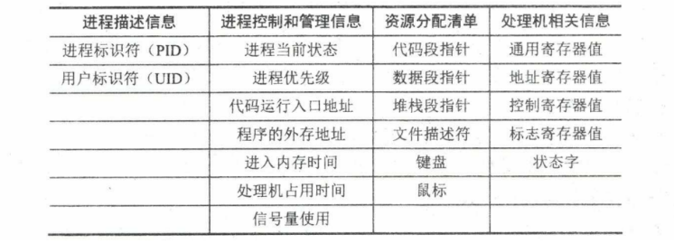
在一个系统中，通常存在着许多进程的 PCB，常用链接方式和索引方式将各进程的 PCB 组织起来。
-
链接方式 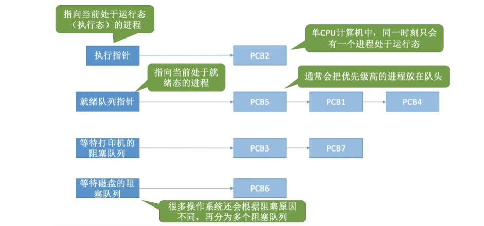
-
索引方式
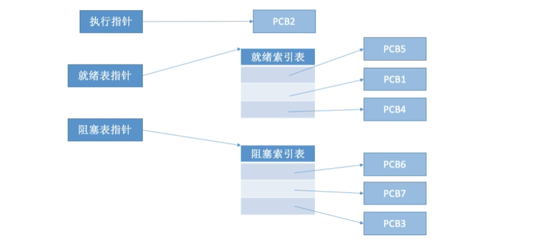
程序段、数据段
由程序段、数据段和 PCB 三部分构成了进程实体（又称进程映像），进程实体反应了进程在某一时刻的状态。
进程映像是静态的，进程则是动态的。
- 程序段就是能被进程调度程序调度到 CPU 执行的程序代码段。程序可被多个进程共享，即多个进程可以运行同一个程序。
- 一个进程的数据段，可以是进程对应的程序加工处理的原始数据，也可以是程序执行时产生的中间或最终结果。
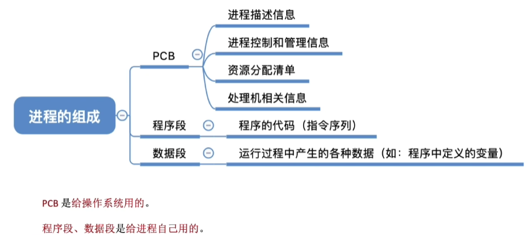
- 创建进程，实质上是创建进程实体中的 PCB；
- 撤销进程，实质上是撤销进程的 PCB；
进程
典型的定义有：
- 进程是程序的一次执行过程。
- 进程是一个程序及其数据在处理机上顺序执行时所发生的活动。
- 进程是具有独立功能的程序在一个数据集合上运行的过程，它是系统进行资源分配和调 度的一个独立单位。
了解了进程实体的概念后，我们可以把传统操作系统中的进程定义为：进程是进程实体的运行过程，是系统进行资源分配和调度的一个独立单位。
进程的特征
进程是由多道程序的并发执行而引出的，它和程序是两个截然不同的概念。
进程的基本特征是对比单个程序的顺序执行提出的，也是对进程管理提出的基本要求。
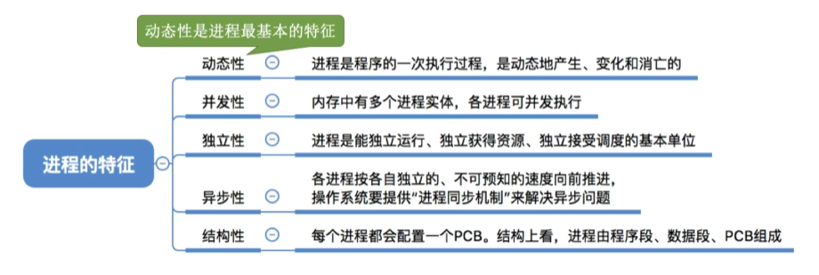
进程的状态与转换
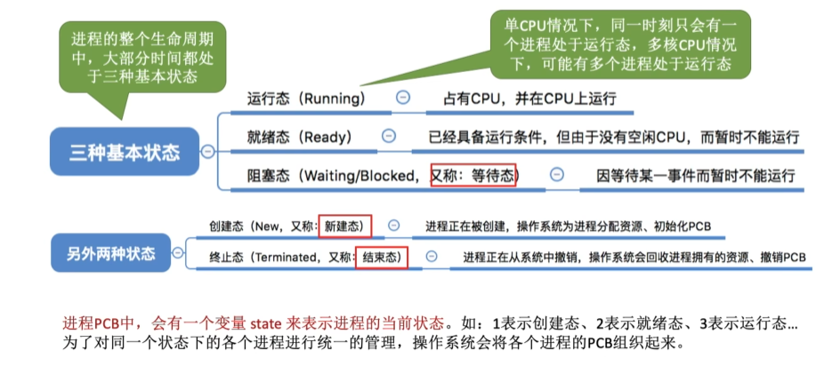
状态
进程通常有以下 5 种状态，前 3 种是进程的基本状态，
-
运行态
进程正在 CPU 上运行。
在单 CPU 中，每个时刻只有一个进程处于运行态。
-
就绪态
进程获得了除处理机外的一切所需资源，一旦得到处理机，便可立即运行。
系统中处于就绪状态的进程可能有多个，通常将它们排成一个队列，称为就绪队列。
-
阻塞态（等待态）
进程正在等待某一事件而暂停运行，如等待某资源为可用（不包括 CPU）或等待 I/O 完成。即使 CPU 空闲，该进程也不能运行。
系统通常将处于阻塞态的进程也排成一个队列，甚至根据阻塞原因的不同，设置多个阻塞队列。
-
创建态
进程正在被创建，尚未转到就绪态。
创建进程需要多个步骤：
- 首先申请一个空白 PCB，并向 PCB 中填写用于控制和管理进程的信息；
- 然后为该进程分配运行时所必须的资源；
- 最后把该进程转入就绪态并插入就绪队列。
如果进程所需的资源尚不能得到满足，如内存不足，则创建工作尚未完成，进程此时所处的状态称为创建态。
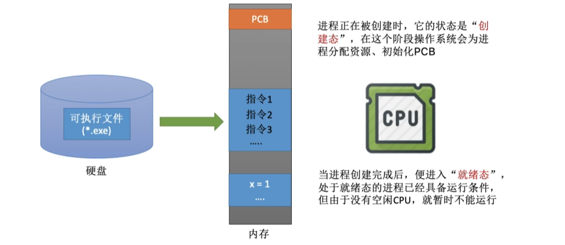
-
终止态 进程从系统中消失，可能是进程正常结束或其他原因退出运行。
进程需要结束运行时，系统首先将该进程置为终止态，然后进一步处理资源释放和回收等工作。
就绪态和阻塞态的区别
就绪态和等待态是进程生命周期中两个完全不同的状态。
- 就绪态是指进程仅缺少 CPU，只要获得 CPU 资源就立即运行；
- 阻塞态是指进程需要其他资源（除了 CPU）或等待某一事件； 在分时系统的时间片轮转机制中，每个进程得到 CPU 的时间很短且非常频紧，进程在运行过程中实际上是频繁地转换到就绪态；而其他资源的使用和分配或某一事件的发生（如 I/O 完成）对应的时间相对来说很长，进程转换到阻塞态的次数也相对较少。 这样来看，就绪态和阻塞态是进程生命周期中两个完全不同的状态。
状态之间的转换
-
就绪态运行态
处于就绪态的进程被调度后，获得 CPU 资源（分派 CPU 的时间片）。
-
运行态就绪态
- 处于运行态的进程在时间片用完后，不得不让出 CPU，从而进程由运行态转换为就绪态。
- 当有更高优先级的进程就绪时，调度程序将正在执行的进程转换为就绪态，让更高优先级的进程执行。
-
运行态阻塞态
进程请求某一资源的使用和分配或等待某一事件的发生（如 I/O 操作的完成）时，它就从运行态转换为阻塞态。
-
阻塞态就绪态
进程等待的事件到来时，如 I/O 操作结束或中断结束时，中断处理程序必须把相应进程的状态由阻塞态转换为就绪态。
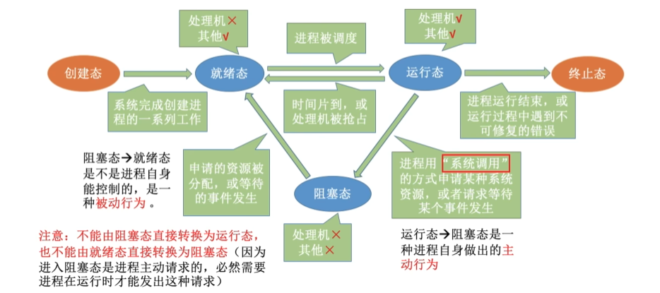
进程控制
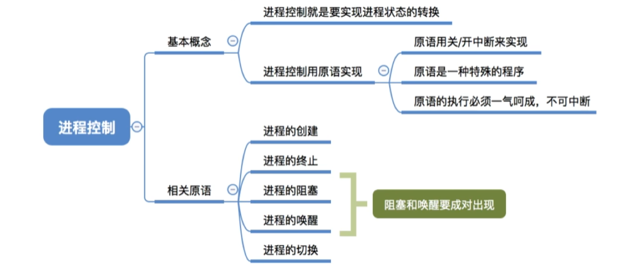
进程控制的主要功能是对系统中的所有进程实施有效的管理，它具有创建新进程、撤销已有进程、实现进程状态转换等功能。
在操作系统中，一般把进程控制用的程序段称为原语。原语的特点是执行期间不允许中断，它是一个不可分割的基本单位。
如何实现原语的“原子性”
原语的执行具有原子性，即执行期间不允许中断。
可以使用“关中断指令”和“开中断指令”实现。
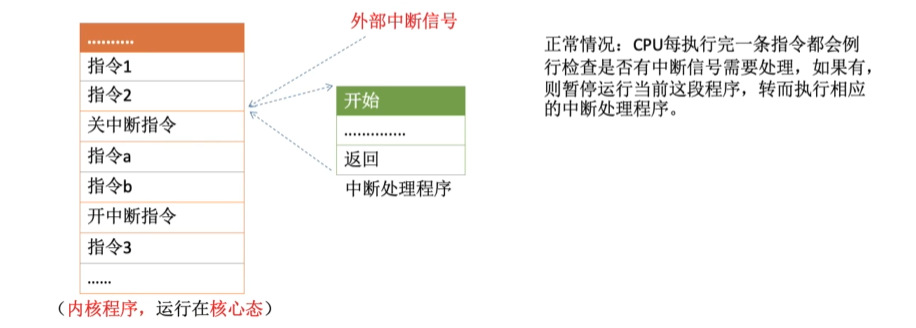
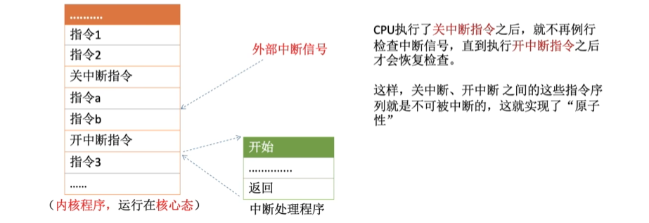
进程的创建
在操作系统中，用户登录、作业调度、系统提供服务、用户程序的应用请求等都会引起进程的创建。
设备分配不会引起进程创建。
操作系统创建新进程的过程如下（创建原语）：
-
为新进程分配一个唯一的进程标识号，并申请一个空白 PCB （PCB 是有限的）。
若申请失败，则创建失败。
-
为进程分配其运行所需的资源（如内存、文件、I/O 设备和 CPU 时间等），这些资源或从操作系统获得，或仅从其父进程获得。
如果资源不足，则并不是创建失败，而是处于创建态，等待内存资源。
-
初始化 PCB，主要包括初始化标志信息、初始化 CPU 状态信息和初始化处理机控制信息，以及设置进程的优先级等。
-
若进程就绪队列能够接纳新进程，则将新进程插入就绪队列，等待被调度运行。
父进程与子进程
允许一个进程创建另一个进程，此时创建者称为父进程，被创建的进程称为子进程。
- 子进程可以继承父进程所拥有的资源。
- 父进程可与子进程共享一部分资源，但不能共享虚拟地址空间。在创建子进程时，会为子进程分配资源，如虚拟地址空间等。
- 子进程也有自己的 PCB。
- 父进程与子进程可以并发执行。
- 当子进程被撤销时，应将其从父进程那里获得的资源还给父进程。此外，在撤销父进程时，通常也会同时撤销其所有的子进程。
进程的终止
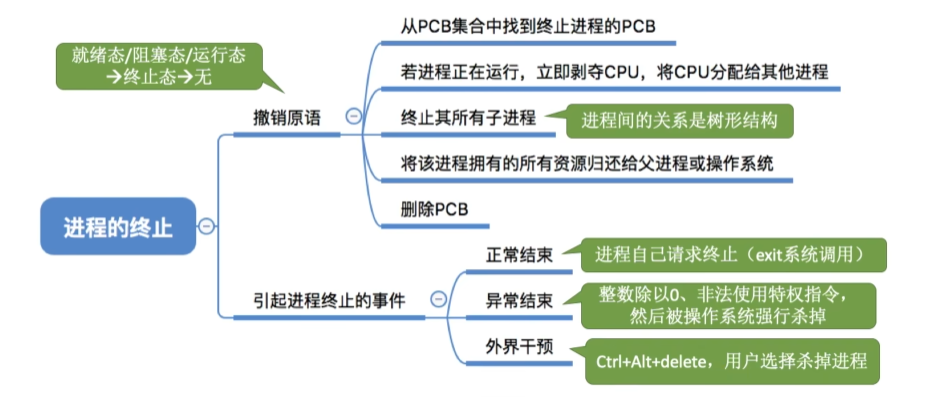
引起进程终止的事件主要有：
- 正常结束：进程的任务己完成并准备退出运行。
- 异常结束：进程在运行时，发生了某种异常事件，使程序无法继续运行，如存储区越界、保护错、 非法指令、特权指令错、运行超时、算术运算错、I/O 故障等。
- 外界干预：指进程应外界的请求而终止运行，如操作员或操作系统干预、父进程请求和父进程终止。
统终止进程的过程如下（终止原语）：
- 根据被终止进程的标识符，检索出该进程的 PCB，从中读出该进程的状态。
- 若被终止进程处于运行状态，立即终止该进程的执行，将 CPU 资源分配给其他进程。若该进程还有子孙进程，则应将其所有子孙进程终止。
- 归还该进程所拥有的全部资源给其父进程，或操作系统。
- 将该 PCB 从所在队列中删除。
进程的阻塞和唤醒
正在执行的进程，由于期待的某些事件未发生，如请求系统资源失败、等待某种操作的完成、新数据尚未到达或无新任务可做等，进程便通过调用阻塞原语，使自已由运行态变为阻塞态。
可见，阻塞是进程自身的一种主动行为，也因此只有处于运行态的进程（获得 CPU），才可能将其转为阻塞态。
阻塞原语的执行过程如下：
- 找到将要被阻塞进程的标识号对应的 PCB。
- 若该进程为运行态，则保护其现场，将其状态转为阻塞态，停止运行。
- 把该 PCB 插入相应事件的等待队列，将处理机资源调度给其他就绪进程。
当被阻塞进程所期待的事件出现时，如它所期待的 I/O 操作已完成或其所期待的数据已到达，由有关进程调用唤醒原语，将等待该事件的进程唤醒。
唤醒原语的执行过程如下：
- 在该事件的等待队列中找到相应进程的 PCB。
- 将其从等待队列中移出，并置其状态为就绪态。
- 把该 PCB 插入就绪队列，等待调度程序调度。
Tip
阻塞原语和唤醒原语是一对作用相反的原语，必须成对使用。
如果在某进程中调用了阻塞原语，则必须在与之合作的或其他相关的进程中安排一条相应的唤醒原语，以便唤醒阻塞进程；否则，阻塞进程将会因不能被唤醒而永久地处于阻塞状态。
进程的切换
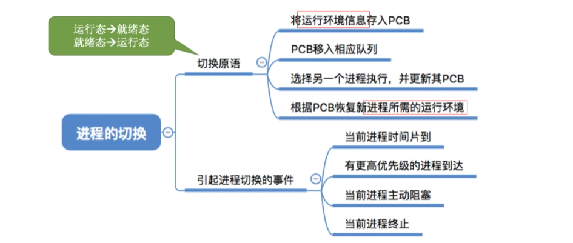
进程切换是在内核的支持下实现的。可以说，任何进程都是在操作系统内核的支持下运行的，是与内核紧密相关的。
上下文：某一时刻 CPU 寄存器和程序计数器的内容。
上下文切换：切换 CPU 到另一个进程需要保存当前进程状态并恢复另一个进程的状态的过程。
上下文切换只能发生在内核态，它是多任务操作系统中的一个必需的特性。
实质：处理机从一个进程的运行转到另一个进程上运行，在这个过程中，进程的运行环境产生了实质性的变化。
上下文切换的流程：
- 挂起一个进程，保存 CPU 上下文，包括程序计数器和其他寄存器。
- 更新 PCB 信息。
- 把进程的 PCB 移入相应的队列，如就绪、在某事件阻塞等队列。
- 选择另一个进程执行，并更新其 PCB。
- 跳转到新进程 PCB 中的程序计数器所指向的位置执行。
- 恢复处理机上下文。
上下支切换的消耗：上下文切换通常是计算密集型的，即需要消耗大量的 CPU 时间。但当处理器提供多个寄存器组的时候，上下文切换就只需要简单改变当前寄存器组的指针。
模式切换
用户态和内核态之间的切换称为模式切换，因为没有改变当前的进程。
模式切换与上下文切换是不同的，模式切换时，CPU 逻辑上可能还在执行同一进程。
调度和切换的区别
- 调度是指决定资源分配给哪个进程的行为，是一种决策行为；
- 切换是指实际分配的行为，是执行行为。
一般来说，先有资源的调度，然后才有进程的切换。
进程的通信
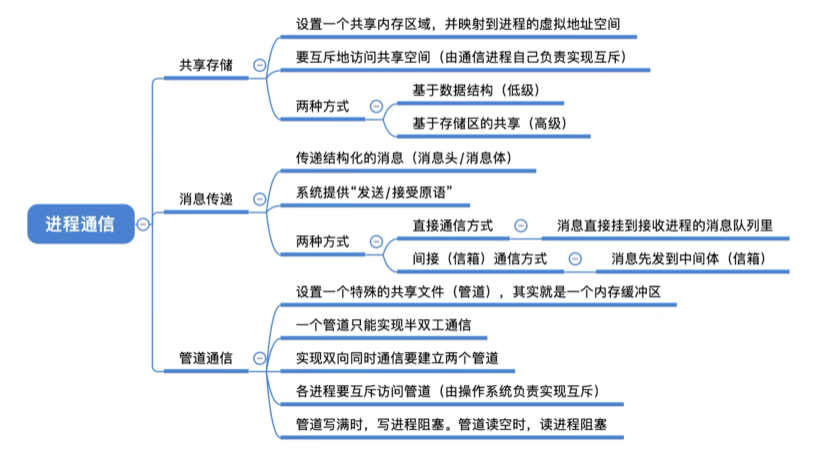
进程通信：进程之间的信息交换。
为什么进程通信需要操作系统支持
进程空间一般都是独立的，进程运行期间一般不能访问其他进程的空间，想让两个进程共享空间，必须通过特殊的系统调用实现。
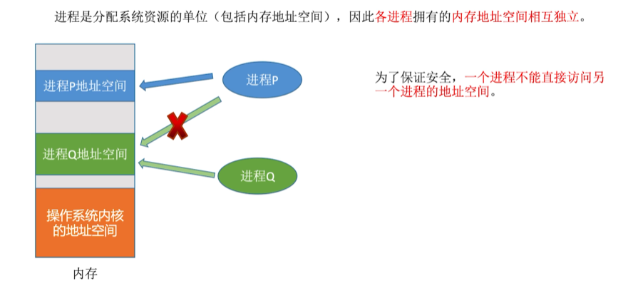
PV 操作是低级通信方式，高级通信方式是指以较高的效率传输大量数据的通信方式。
高级通信方法主要有以下三类。
共享存储
在通信的进程之间存在一块可直接访问的共享空间，通过对这片共享空间进行写/读操作实现进程之间的信息交换。
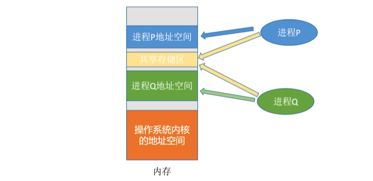
在对共享空间进行写/读操作时，需要使用同步互斥工具（如 PV 操作）对共享空间的写/读进行控制。
共享存储又分为两种：
- 低级方式的共享是基于数据结构的共享；
- 高级方式的共享是基于存储区的共享；
操作系统只负责为通信进程提供可共享使用的存储空间和同步互斥工具，而数据交换则由用户自己安排读/写指令完成。
消息传递
若通信的进程之间不存在可直接访问的共享空间，则必须利用操作系统提供的消息传递方法实现进程通信。
在消息传递系统中，进程间的数据交换以格式化的消息为单位。进程通过系统提供的发送消息和接收消息两个原语进行数据交换。
-
直接通信方式
发送进程直接把消息发送给接收进程，并将它挂在接收进程的消息缓冲队列上，接收进程从消息缓冲队列中取得消息。
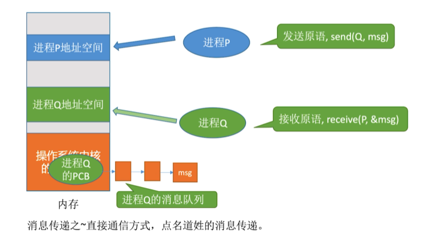
-
间接通信方式
发送进程把消息发送到某个中间实体（一般称为信箱），接收进程从中间实体取得消息。
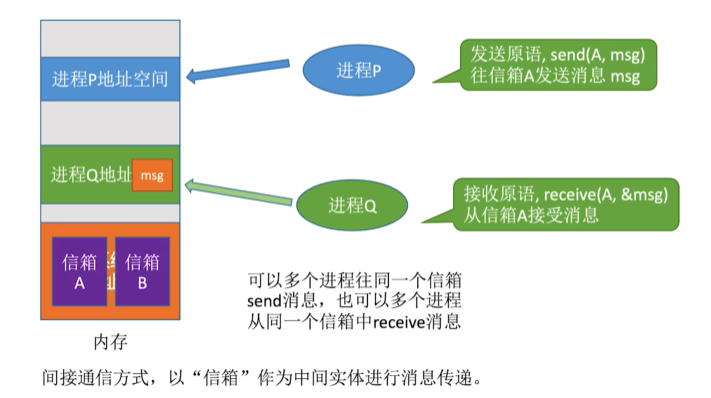
管道通信
管道是一种存储在内存中的、固定大小的缓冲区，管道的大小通常为内存的一页，其大小不受磁盘容量大小的限制。
管道通信允许两个进程按生产者-消费者方式进行通信，生产者向管道的一端写，消费者从管道的另一端读。
数据在管道中是先进先出的。
-
只要管道非空，读进程就能从管道中读出数据。若管道读空，则读进程阻塞，直到写进程往管道中写入新的数据，再将读进程唤醒。
-
只要管道不满，写进程就能往管道中写入数据。若管道写满，则写进程阻塞，直到读进程读出数据，再将写进程唤醒。
-
进程对管道进行读操作和写操作都有可能被阻塞。因为管道的读/写操作都可能遇到缓冲区满或空的情况，当管道满时，写操作会被阻塞，直到有数据读出；而当管道空时，读操作会被阻塞，直到有数据写入。
-
普通管道只允许单向通信，若要实现父子进程双向通信，则需要定义两个管道。
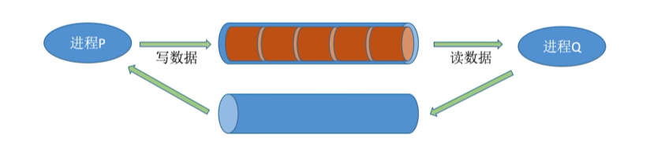
-
从管道读数据是一次性操作，数据一旦被读取，就会彻底消失。因此当多个进程读同一个管道时，可能会错乱，通常采用一个管道允许多个写进程，一个读进程的方案解决。
为了协调双方的通信，管道机制必须提供三方面的协调能力：互斥、同步和确定对方的存在。
线程
线程的概念
- 引入进程的目的是更好地使多道程序并发执行，提高资源利用率和系统吞吐量。
- 引入线程的目的是减小程序在并发执行时所付出的时空开销，提高操作系统的并发性能。
线程最直接的理解就是“轻量级进程”，它是一个基本的 CPU 执行单元，也是程序执行流的最小单元，由线程 ID、程序计数器、寄存器集合和堆栈组成。
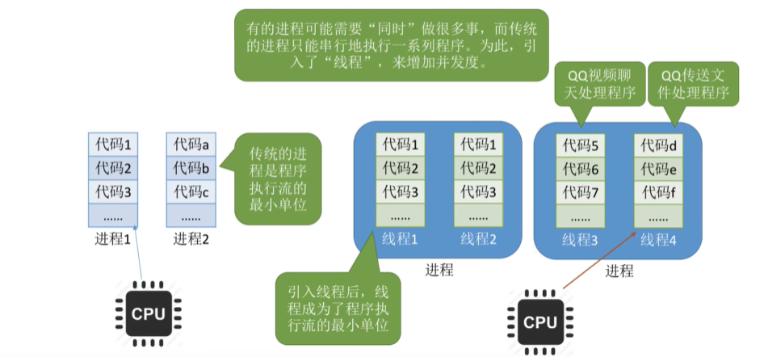
线程是进程中的一个实体，是被系统独立调度和分派的基本单位，线程自己不拥有系统资源，只拥有一点儿在运行中必不可少的资源，但它可与同属一个进程的其他线程共享进程所拥有的全部资源。
一个线程可以创建和撤销另一个线程，同一进程中的多个线程之间可以并发执行。
线程与进程的比较
引入线程机制后的变化
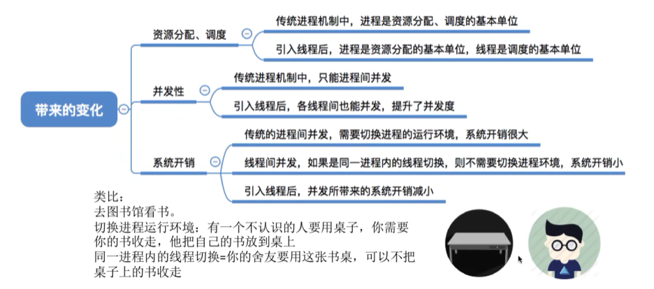
不管系统是否支持线程，进程都是资源分配的基本单位。
-
调度
在传统的操作系统中，拥有资源和独立调度的基本单位都是进程，每次调度都要进行上下文切换，开销较大。
在引入线程的操作系统中，线程是独立调度的基本单位，而线程切换的代价远低于进程。
在同一进程中，线程的切换不会引起进程切换。但从一个进程中的线程切换到另一个进程中的线程时，会引起进程切换。
-
并发性
在引入线程的操作系统中，
- 进程之间可以并发执行，
- 一个进程中的多个线程之间可以并发执行
- 不同进程中的线程也可以并发执行
-
拥有资源
进程是系统中拥有资源的基本单位，而线程不拥有系统资源，但线程可以访问其隶属进程的系统资源，这主要表现在属于同一进程的所有线程都具有相同的地址空间。
若线程也是拥有资源的单位, 则切换线程就需要较大的时空开销，线程这个概念的提出就没有意义。
-
独立性
每个进程都拥有独立的地址空间和资源，除了共享全局变量，不允许其他进程访问。某进程中的线程对其他进程不可见。
同一进程中的不同线程是为了提高并发性及进行相互之间的合作而创建的，它们共享进程的地址空间和资源。
-
系统开销
在创建或撤销进程时，系统都要为之分配或回收进程控制块 PCB 及其他资源。操作系统为此所付出的开销大于创建或撤销线程时的开销。
在进程切换时涉及进程上下文的切换，而线程切换时只需保存和设置少量寄存器内容，开销很小。
由于同一进程内的多个线程共享进程的地址空间，因此这些线程之间的同步与通信非常容易实现，甚至无须操作系统的干预。
-
支持多处理机系统
对于传统单线程进程，进程只能运行在一个处理机上。对于多线程进程，可以将进程中的多个线程分配到多个处理机上执行。
线程的属性
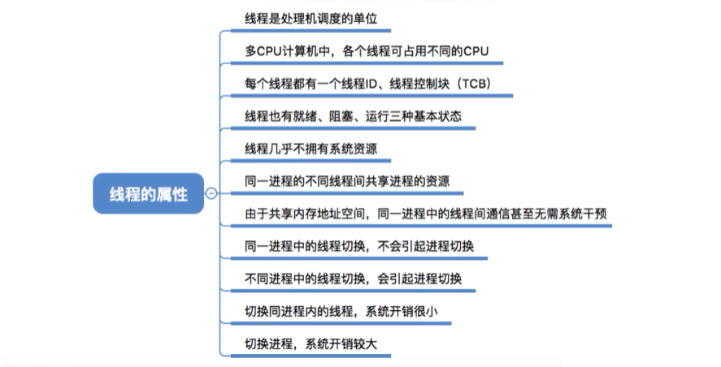
多线程操作系统中的进程已不再是一个基本的执行实体，但它仍具有与执行相关的状态。进程处于“执行”状态，实际上是指该进程中的某线程正在执行。
- 线程是一个轻型实体，它不拥有系统资源，但每个线程都应有一个唯一的标识符和一个线程控制块，线程控制块记录线程执行的寄存器和栈等现场状态。
- 不同的线程可以执行相同的程序，即同一个服务程序被不同的用户调用时，操作系统将它们创建成不同的线程。
- 同一进程中的各个线程共享该进程所拥有的资源。
- 线程是 CPU 的独立调度单位，多个线程是可以并发执行的。在单 CPU 的计算机系统中，各线程可交替地占用 CPU；在多 CPU 的计算机系统中，各线程可同时占用不同的 CPU，若各个 CPU 同时为一个进程内的各线程服务，则可缩短进程的处理时间。
- 一个线程被创建后，便开始了它的生命周期，直至终止。线程在生命周期内会经历阻塞态、就绪态和运行态等各种状态变化。
线程的状态与转换
由于线程之间的相互制约，致使线程在运行中呈现出间断性。线程也有就绪、阻塞和运行三种基本状态。
- 执行态：线程己获得处理机而正在运行。
- 就绪态：线程已具备各种执行条件，只需再获得 CPU 便可立即执行。
- 阻塞态：线程在执行中因某事件受阻而处于暂停状态。
线程这三种基本状态之间的转换和进程基本状态之间的转换一样。
线程的组织与控制
线程控制块
与进程类似，系统也为每个线程配置一个线程控制块(TCB)，用于记录控制和管理线程的信息。
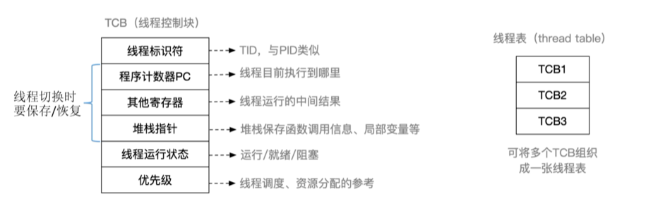
同一进程中的所有线程都完全共享进程的地址空间和全局变量。
各个线程都可以访问进程地址空间的每个单元，所以一个线程可以读、写或甚至清除另一个线程的堆栈。
线程的创建
线程也是具有生命期的，它由创建而产生，由调度而执行，由终止而消亡。
用户程序启动时，通常仅有一个称为“初始化线程”的线程正在执行，其主要功能是用于创建新线程。
线程的终止
当一个线程完成自己的任务后，或线程在运行中出现异常而要被强制终止时，由终止线程调用相应的函数执行终止操作。但是有些线程（主要是系统线程）一旦被建立，便一直运行而不会被终止。
通常，线程被终止后并不立即释放它所占有的资源，只有当进程中的其他线程执行了分离函数后，被终止线程才与资源分离，此时的资源才能被其他线程利用。
被终止但尚未释放资源的线程仍可被其他线程调用，以使被终止线程重新恢复运行。
线程的实现方式
线程的实现可以分为两类：用户级线程(User-Level Thread, ULT)和内核级线程(Kermel-Level Thread, KLT)。
内核级线程又称内核支持的线程，也可以叫系统级线程。
用户级线程(ULT)
在用户级线程中，有关线程管理（创建、撤销和切换等）的所有工作都由应用程序在用户空间内（用户态）完成，无 须内核的干预，内核意识不到线程的存在，因此用户级线程可以在不支持内核级线程的操作系统上实现。
Tip
用户级线程的控制块是由用户空间的库函数维护的，操作系统并不知道用户级线程的存在，用户级线程的控制块一般存放在用户空间的数据结构中，如链表或数组，由用户空间的线程库来管理。
操作系统只负责为每个进程建立一个进程控制块，操作系统只能看到进程，而看不到用户级线程，所以不会为每个用户级线程建立一个线程控制块。
但是，内核级线程的线程控制块是由操作系统创建的，当一个进程创建一个内核级线程时，操作系统会为该线程分配一个线程控制块，并将其加入内核的线程管理数据结构。
应用程序可以通过使用线程库设计成多线程程序。
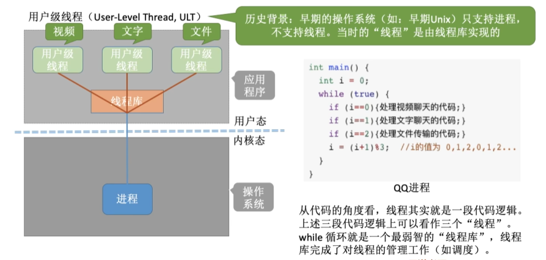
对于设置了用户级线程的系统，其调度仍然以进程为单位进行，各个进程轮流执行一个时间片。
优点：
- 由于不需要转换到内核空间，线程切换节省了模式切换的开销。
- 不同的进程可根据自身的需要对自己的线程选择不同的调度算法。
- 用户级线程的实现与操作系统平台无关，对线程管理的代码是属于用户程序的一部分。
缺点：
- 系统调用的阻塞问题：当进程内的一个线程被阻塞时，进程内的所有线程都被阻塞。
- 不能发挥多处理机的优势：内核每次分配给一个进程的仅有一个 CPU，因此进程中仅有一个线程能执行。
内核级线程(KLT)
内核级线程是在内核的支持下运行的，线程管理的所有工作也是在内核空间内实现的。
操作系统为每个内核级线程设置一个线程控制块 TCB，内核根据该控制块感知某线程的存在，并对其加以控制。
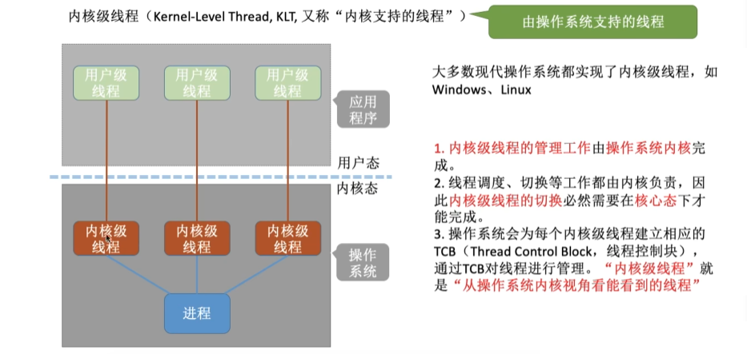
优点：
- 能发挥多 CPU 的优势，内核能同时调度同一进程中的多个线程并行执行。
- 当一个线程被阻塞时，内核可以运行该进程中的其他线程，也可运行其他进程中的线程。
- 内核支持线程具有很小的数据结构和堆栈，线程切换比较快、开销小。
- 内核本身也可采用多线程技术，可以提高系统的执行速度和效率。
缺点：
同一进程中的线程切换，需要从用户态转到核心态进行，系统开销较大。因为用户进程的线程在用户态运行，而线程调度和管理是在内核实现的。
组合方式
在组合实现方式中，内核支持多个内核级线程的建立、调度和管理，同时允许用户程序建立、调度和管理用户级线程。
组合方式能结合 KLT 和 ULT 的优点，并且克服各自的不足。
多线程模型
有些系统同时支持用户线程和内核线程，由于用户级线程和内核级线程连接方式的不同，从而形成了三种不同的多线程模型。
一对一模型
将每个用户级线程映射到一个内核级线程。
优点：当一个线程被阻塞后，允许调度另一个线程运行，所以并发能力较强。
缺点：每创建一个用户线程，相应地就需要创建一个内核线程，开销较大。
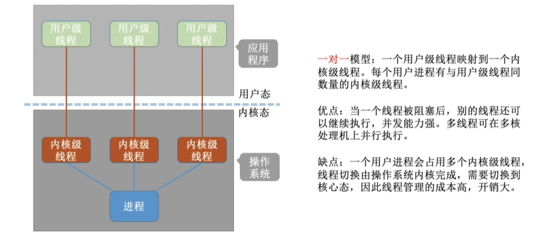
多对一模型
将多个用户级线程映射到一个内核级线程。
优点：线程管理是在用户空间进行的，效率比较高。
缺点：如果一个线程在访问内核时发生阻塞，则整个进程都会被阻塞；在任何时刻，只有一个线程能够访问内核，多个线程不能同时在多个处理机上运行。
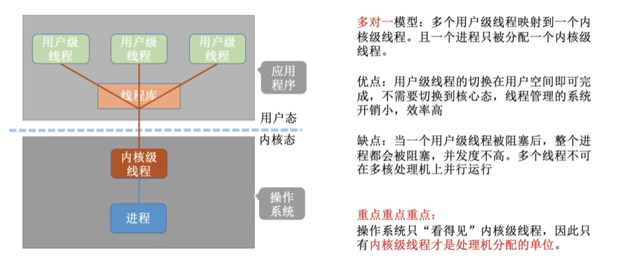
多对多模型
将 n 个用户线程映射到 m 个内核级线程上，要求。
既克服了多对一模型并发度不高的缺点，又克服了一对一模型开销太大的缺点。此外，还拥有上述两种模型各自的优点。
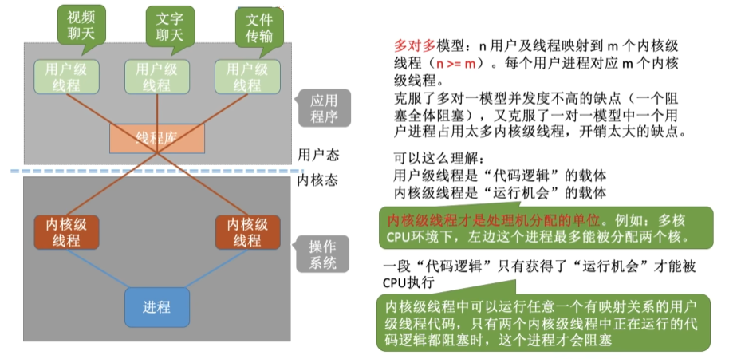
CPU 调度
调度的基本概念
在多道程序系统中，进程的数量往往多于 CPU 的个数，因此进程争用 CPU 的情况在所难免。
CPU 调度是对 CPU 进行分配，即从就绪队列中按照一定的算法选择一个进程并将处理机分配给它运行，以实现进程并发地执行。
处理机调度是多道程序操作系统的基础，是操作系统设计的核心问题。
调度的层次
三级调度
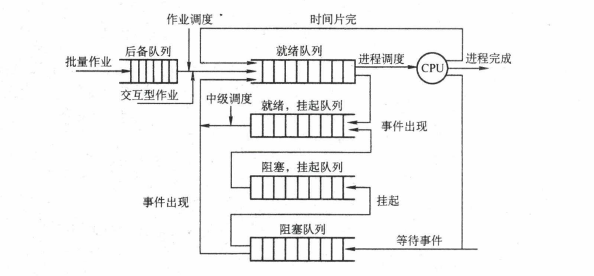
一个作业从提交开始直到完成，往往要经历三级调度：
-
高级调度（作业调度）
按照一定的原则从外存上处于后备队列的作业中挑选一个或多个，给它们分配资源，并建立相应的进程，以使它们获得竞争 CPU 的权利。
每个作业只调入一次、调出一次，调入时会建立 PCB，调出时才撤销 PCB。
多道批处理系统中大多配有作业调度，而其他系统中通常不需要配置作业调度。
作业调度就是内存与辅存之间的调度。
-
中级调度（内存调度）
目的是提高内存利用率和系统吞吐量。将暂时不能运行的进程调至外存等待，此时进程的状态称为挂起态。当它们己具备运行条件且内存空闲时，由中级调度把外存上的那些进程重新调入内存，并修改其状态为就绪态，挂在就绪队列上等待。
中级调度发生的频率比高级调度高。
中级调度实际上是存储器管理中的对换功能。
-
低级调度（进程调度）
按照某种算法从就绪队列中选取一个进程，将 CPU 分配给它。进程调度是最基本的一种调度，在各种操作系统中都必须配置这级调度。进程调度的频率很高。
进程的挂起态与七状态模型
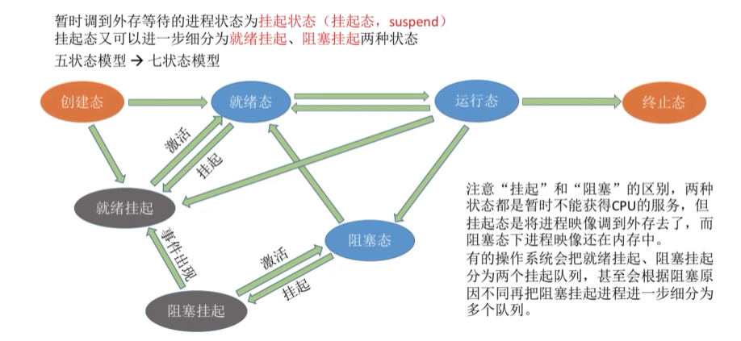
三级调度的联系
调度的实现
调度程序（调度器）
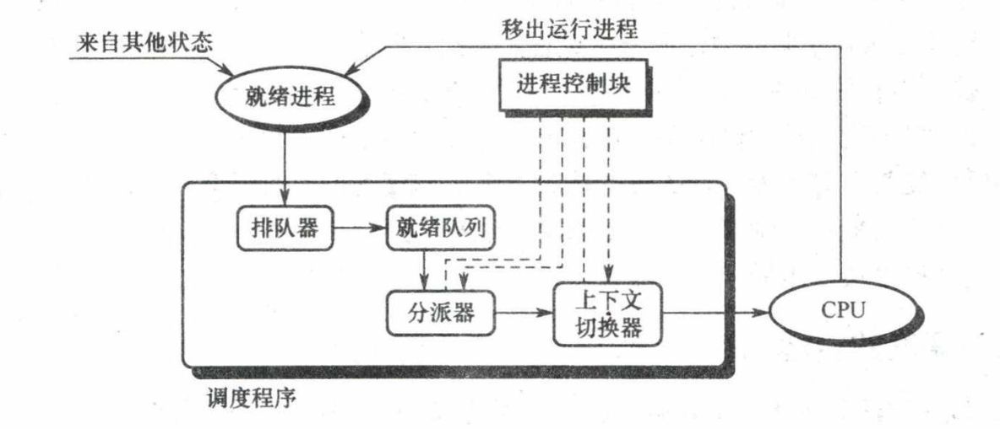
用于调度和分派 CPU 的组件称为调度程序，它通常由三部分组成：
-
排队器
将系统中的所有就绪进程按照一定的策略排成一个或多个队列，以便于调度程序选择。每当有一个进程转变为就绪态时，排队器便将它插入到相应的就绪队列中。
-
分派器
依据调度程序所选的进程，将其从就绪队列中取出，将 CPU 分配给新进程。
-
上下文切换器
在对处理机进行切换时，会发生两对上下文的切换操作：
- 第一对，将当前进程的上下文保存到其 PCB 中，再装入分派程序的上下文，以便分派程序运行；
- 第二对，移出分派程序的上下文，将新选进程的 CPU 现场信息装入处理机的各个相应寄存器；
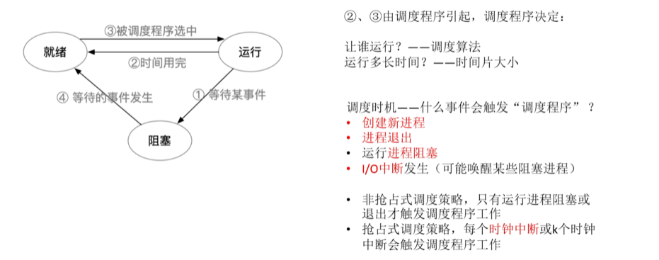
上图所说的是进程的调度，如果一个系统支持线程，那么调度的对象就是线程了。
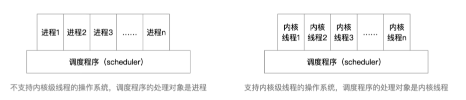
调度的时机、切换与过程
调度程序是操作系统内核程序。
请求调度的事件发生后，才可能运行调度程序，调度了新的就绪进程后，才会进行进程切换。
理论上这三件事情应该顺序执行，但在实际的操作系统内核程序运行中，若某时刻发生了引起进程调度的因素，则不一定能马上进行调度与切换。
现代操作系统中，应该进行进程调度与切换的情况如下：
- 创建新进程后，由于父进程和子进程都处于就绪态，因此需要决定是运行父进程还是运行子进程，调度程序可以合法地决定其中一个进程先运行。
- 进程正常结束后或者异常终止后，必须从就绪队列中选择某个进程运行。若没有就绪进程，则通常运行一个系统提供的闲逛进程。
- 当进程因 I/O 请求、信号量操作或其他原因而被阻塞时，必须调度其他进程运行。
- 当I/O 设备完成后，发出 I/O 中断，原先等待 I/O 的进程从阻塞态变为就绪态，此时需要决定是让新的就绪进程投入运行，还是让中断发生时运行的进程继续执行。
进程切换
进程切换往往在调度完成后立刻发生，它要求保存原进程当前断点的现场信息，恢复被调度进程的现场信息。
对于通常的进程而言，其创建、撤销及要求由系统设备完成的 I/O 操作，都是利用系统调用而进入内核，再由内核中的相应处理程序予以完成的。进程切换同样是在内核的支持下实现的，因此可以说，任何进程都是在操作系统内核的支持下运行的，是与内核紧密相关的。
切换 CPU 到另一个进程需要保存当前进程状态并恢复另一个进程的状态，这个任务称为上下文切换。进程上下文采用进程 PCB 表示，包括 CPU 寄存器的值、进程状态和内存管理信息等。
上下文切换只能发生在内核态，它是多任务操作系统中的一个必需的特性。
当进行上下文切换时，内核将旧进程状态保存在其 PCB 中，然后加载经调度而要执行的新进程的上下文。在切换过程中，进程的运行环境产生实质性的变化。
上下文切换的流程如下：
- 挂起一个进程，将 CPU 上下文保存到 PCB，包括程序计数器和其他寄存器。
- 将进程的 PCB 移入相应的队列，如就绪、在某事件阻塞等队列。
- 选择另一个进程执行，并更新其 PCB。
- 恢复新进程的 CPU 上下文。
- 跳转到新进程 PCB 中的程序计数器所指向的位置执行。
上下文切换的消耗：上下文切换通常是计算密集型的，上下文切换对系统来说意味着消耗大量的 CPU 时间。有些 CPU 提供多个寄存器组，这样，上下文切换就只需要简单改变当前寄存器组的指针。
用户态和内核态之间的切换称为模式切换，而不是上下文切换，因为没有改变当前的进程。模式切换与上下文切换是不同的，模式切换时，CPU 逻辑上可能还在执行同一进程。用户进程最开始都运行在用户态，若进程因中断或异常进入核心态运行，执行完后又回到用户态刚被中断的进程运行。
调度和切换的区别：调度是指决定资源分配给哪个进程的行为，是一种决策行为；切换是指实际分配的行为，是执行行为。一般来说，先有资源的调度，然后才有进程的切换。
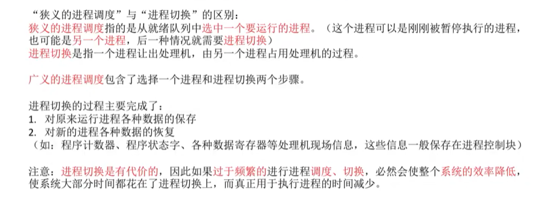
进程调度方式
进程调度方式，是指当某个进程正 在 CPU 上执行时，若有某个更为重要或紧迫的进程需要处理，即有优先权更高的进程进入就绪队列，此时应如何分配 CPU。
-
非抢占调度方式（非剥夺方式）
当有更重要或紧迫的进程进入就绪队列时，仍然让当前进程继续执行，直到该进程运行完成或发生某种事件而进入阻塞态时，才把 CPU 分配给其他进程。
非抢占调度方式的优点是实现简单、系统开销小，适用于大多数的批处理系统，但它不能用于分时系统和大多数的实时系统。
-
抢占调度方式（剥夺方式）
当一个进程正在 CPU 上执行时，若有一个更重要或紧迫的进程需要使用 CPU，则暂停正在执行的进程，将 CPU 分配给更重要或紧迫的进程。
抢占调度方式对提高系统吞吐率和响应效率都有明显的好处。适用于分时操作系统、实时操作系统。
闲逛进程
在进程切换时，如果系统中没有就绪进程，就会调度闲逛进程运行，如果没有其他进程就绪，该进程就一直运行，并在执行过程中测试中断。
特点：
- 优先级最低
- 不需要 CPU 之外的资源，它不会被阻塞
调度算法
评价指标
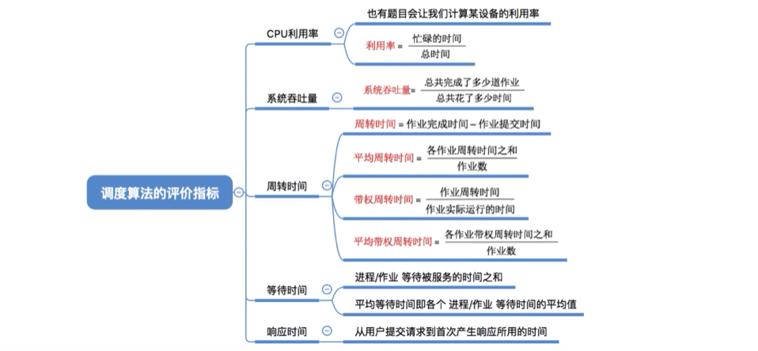
-
CPU 利用率
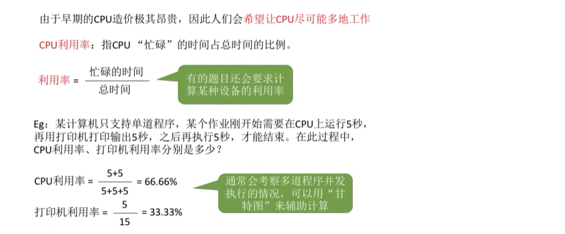
-
系统吞吐量
-
周转时间
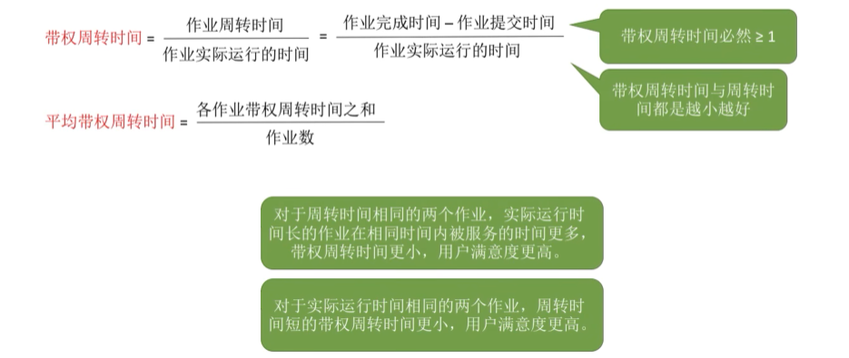
-
等待时间
-
响应时间
先来先服务调度算法(FCFS)
FCFS, First Come First Serve
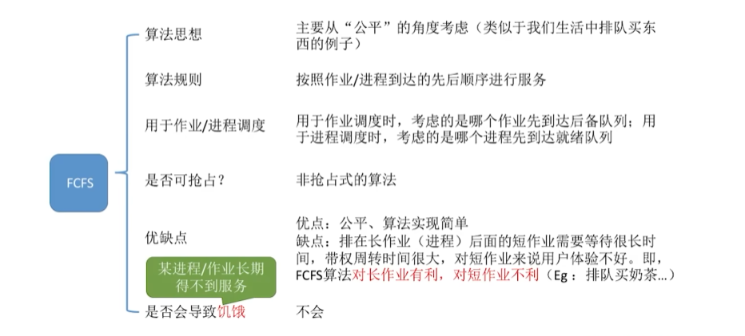
FCFS 调度算法是一种最简单的调度算法，它既可用于作业调度，又可用于进程调度。
- 在作业调度中，算法每次从后备作业队列中选择最先进入该队列的作业。
- 在进程调度中，算法每次从就绪队列中选择最先进入该队列的进程。
FCFS 调度算法属于不可剥夺算法。
FCFS 调度算法对所有作业都是公平的，但若一个长作业先到达系统，就会使后面的许多短作业等待很长时间，因此不能作为分时系统和实时系统的主要调度策略，但它常被结合在其他调度策略中使用。
FCFS 调度算法的特点是算法简单，但效率低；对长作业比较有利，但对短作业不利（相对 SJF 和高响应比）；有利于 CPU 繁忙型作业，而不利于 I/O 繁忙型作业。
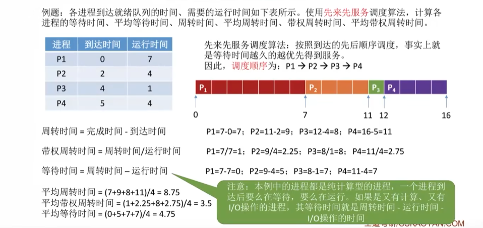
短作业优先调度算法(SJF)
SJF, Shortest Job First
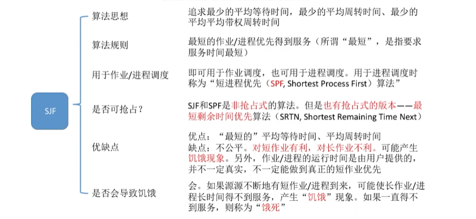
短作业（进程）优先调度算法是指对短作业（进程）优先调度的算法。
- 短作业优先（SJF）调度算法从后备队列中选择运行时间最短的作业；
- 短进程优先（SPF）调度算法从就绪队列中选择运行时间最短的进程；
死锁和饥饿的区别
- 死锁是系统环形等待
- 饥饿是调度策略问题
缺点：
-
该算法对长作业不利，SJF 调度算法中长作业的周转时间会增加。甚至有可能导致长作业长期不被调度而产生“饥饿”现象
-
该算法完全未考虑作业的紧迫程度，因而不能保证紧迫性作业会被及时处理。
-
由于作业的长短是根据用户所提供的估计执行时间而定的，而用户又可能会有意或无意地缩短其作业的估计运行时间，致使该算法不一定能真正做到短作业优先调度。
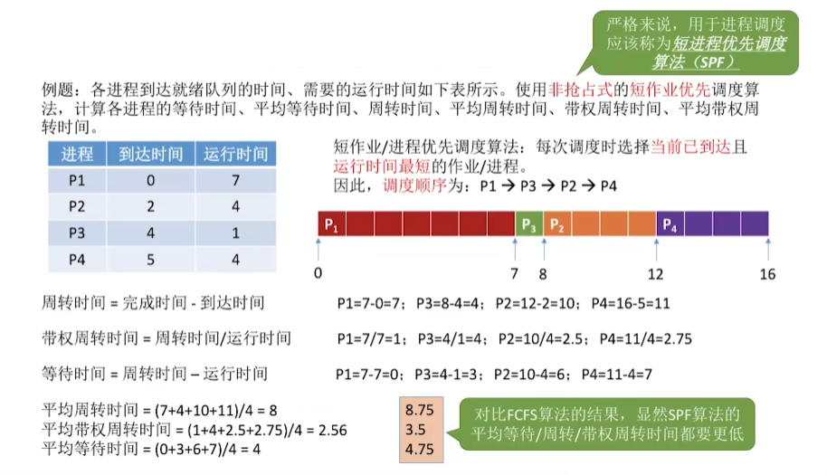
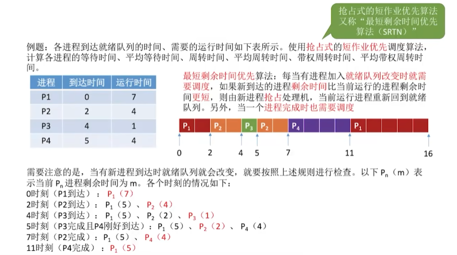
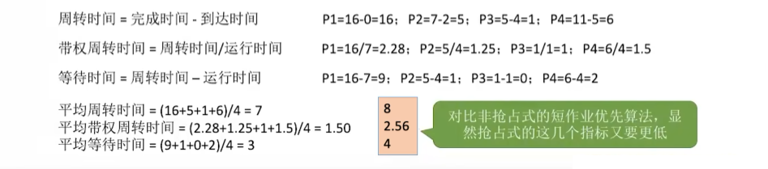
Tip
SJF 调度算法的平均等待时间、平均周转时间最少。
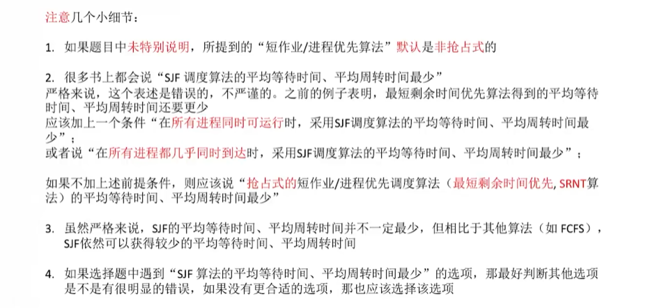
优先级调度算法(PR)
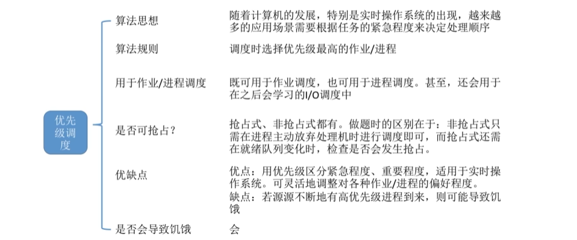
优先级调度算法既可用于作业调度，又可用于进程调度。
优先级用于描述作业的紧迫程度，
- 在作业调度中，优先级调度算法每次从后备作业队列中选择优先级最高的作业。
- 在进程调度中，优先级调 度算法每次从就绪队列中选择优先级最高的进程。
根据新的更高优先级进程能否抢占正在执行的进程，可将该调度算法分为如下两种：
-
非抢占式优先级调度算法
当一个进程正在处理机上运行时，即使有某个优先级更高的进程进入就绪队列，仍让正在运行的进程继续运行，直到由于其自身的原因而让出处理机时，才把处理机分配给就绪队列中优先级最高的进程。
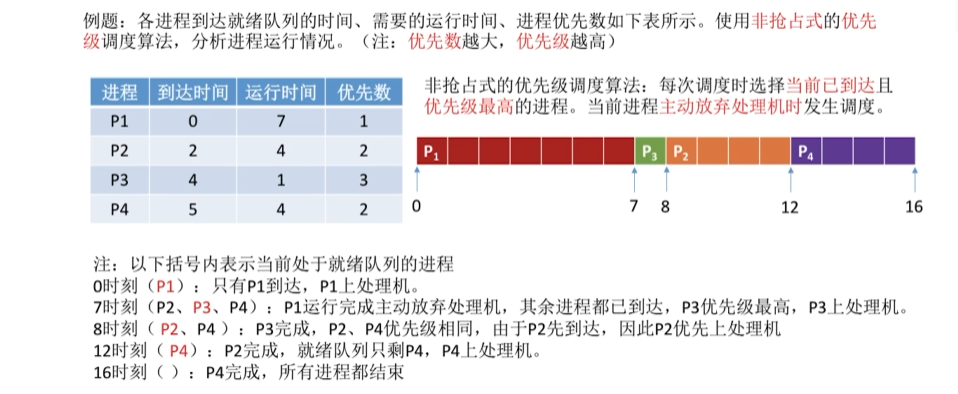
-
抢占式优先级调度算法
当一个进程正在处理机上运行时，若有某个优先级更高的进程进入就绪队列，则立即暂停正在运行的进程，将处理机分配给优先级更高的进程。
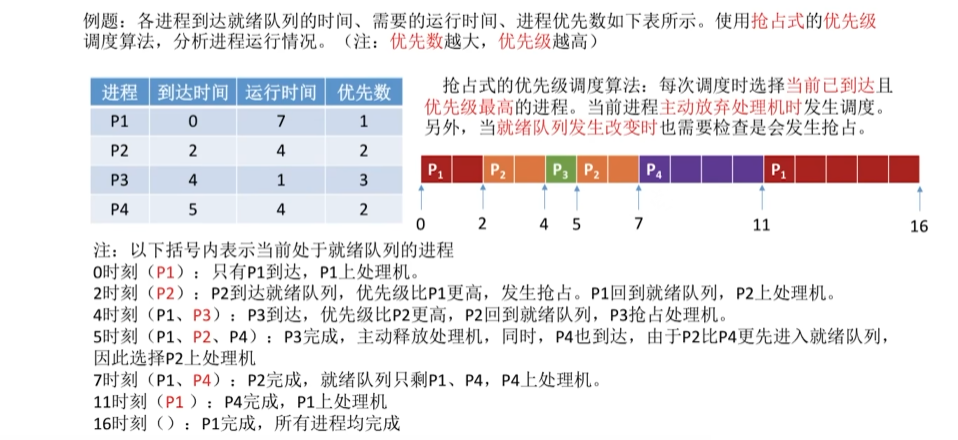
根据进程创建后其优先级是否可以改变，可以将进程优先级分为以下两种：
-
静态优先级
优先级是在创建进程时确定的，且在进程的整个运行期间保持不变。
优点是简单易行，系统开销小；缺点是不够精确，可能出现优先级低的进程长期得不到调度的情况。
-
动态优先级
创建进程时先赋予进程一个优先级，但优先级会随进程的推进或等待时间的增加而改变，以便获得更好的调度性能。
进程优先级的设置参照原则
系统进程用户进程
系统进程作为系统的管理者，理应拥有更高的优先级。
交互型进程非交互型进程（前台进程后台进程）
在前台运行的正在和用户交互的进程应该更快速地响应，因此自然需要被优先处理。
I/O 型进程计算型进程
I/O 型进程是指会频繁使用 I/O 设备的进程，计算型进程是指会频繁使用 CPU 的进程（很少使用 I/O 设备）。
将 I/O 型进程的优先级设置得更高，就更有可能让 I/O 设备尽早开始工作，进而提升系统的整体效率。
高响应比优先调度算法(HRRN)
HRRN, Highest Response Ratio Next
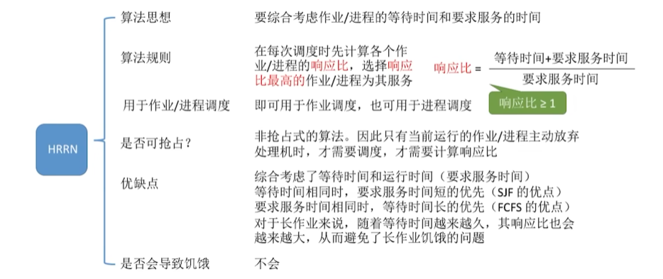
高响应比优先调度算法主要用于作业调度，是对 FCFS 调度算法和 SJF 调度算法的一种综合平衡，同时考虑了每个作业的等待时间和估计的运行时间。
每次进行作业调度时，先计算后备作业队列中每个作业的响应比，从中选出响应比最高的作业投入运行。
- 作业的等待时间相同时，要求服务时间越短，响应比越高，有利于短作业，类似于 SJF。
- 要求服务时间相同时，作业的响应比由其等待时间决定，等待时间越长，其响应比越高，类似于 FCFS。
- 对于长作业，作业的响应比可以随等待时间的增加而提高， 当其等待时间足够长时，也可获得处理机，克服了“饥饿“现象。
时间片轮转调度算法(RR)
RR, Round-Robin
时间片轮转调度算法主要适用于分时系统。
系统将所有就绪进程按 FCFS 策略排成一个就绪队列，调度程序总是选择就绪队列中的第一个进程执行，但仅能运行一个时间片， 如 50ms。在使用完一个时间片后，即使进程并未运行完成，它也必须被剥夺处理机给下一个就绪进程，而被剥夺的进程返回到就绪队列的末尾重新排队，等候再次运行。
在时间片轮转调度算法中，时间片的大小对系统性能的影响很大。
- 若时间片很大，则所有进程都能在一个时间片内执行完毕，则时间片轮转调度算法就退化为先来先服务调度算法。
- 若时间片很小，则处理机将在进程间过于频繁地切换，使处理机的开销增大，而真正用于运行用户进程的时间将减少。
因此，时间片的大小应选择适当，时间片的长短通常由系统的响应时间、就绪队列中的进程数目和系统的处理能力确定。
多级反馈队列调度算法
多级反馈队列调度算法是时间片轮转调度算法和优先级调度算法的综合与发展。
通过动态调整进程优先级和时间片大小，多级反馈队列调度算法可以兼顾多方面的系统目标。
实现思想：
-
设置多个就绪队列，并为每个队列赋予不同的优先级。
第 1 级队列的优先级最高，第 2 级队列的优先级次之，其余队列的优先级逐个降低。
-
赋予各个队列的进程运行时间片的大小各不相同。
优先级越高的队列，每个进程的时间片就越小。
-
每个队列都采用 FCFS 算法。
当新进程进入内存后，首先将它放入第 1 级队列的末尾，按 FCFS 原则等待调度。
当轮到该进程执行时，如它能在该时间片内完成，便可撤离系统。 若在一个时间片结束时尚未完成，调度程序将其转入第 2 级队列的末尾等待调度；若在第 2 级队列中运行一个时间片后仍未完成，再将它放入第 3 级队列，以此类推。
当进程最后被降到第 n 级队列后，在第 n 级队列中便采用时间片轮转方式运行。
-
按队列优先级调度。
仅当第 1 级队列为空时，才调度第 2 级队列中的进程运行；仅当第 1〜i-1 级队列均为空时，才会调度第 i 级队列中的进程运行。
若处理机正在执行第 i 级队列中的某进程时，又有新进程进入任何一个优先级较高的队列，此时须立即把正在运行的进程放回到第 i 级队列的末尾，而把 CPU 分配给新到的高优先级进程。
多级队列调度算法
该算法在系统中设置多个就绪队列，将不同类型或性质的进程固定分配到不同的就绪队列，每个队列可实施不同的调度算法。
同一队列中的进程可以设置不同的优先级，不同的队列本身也可以设置不同的优先级。
同步与互斥
同步与互斥的基本概念
临界资源
一个时间段内只允许一个进程使用的资源称为临界资源。许多物理设备都属于临界资源，如打印机等。此外，还有许多变量、数据等都可以被若干进程共享，也属于临界资源。
临界资源的访问过程分成 4 个部分：
- 进入区：检查可否进入临界区，若能进入临界区，则应设置正在访问临界区的标志，以阻止其他进程同时进入临界区。
- 临界区：进程中访问临界资源的那段代码，又称临界段。
- 退出区：将正在访问临界区的标志清除。
- 剩余区：代码中的其余部分。
同步
也称直接制约关系，是指为完成某种任务而建立的两个或多个进程，这些进程因为需要协调它们的运行次序而等待、传递信息所产生的制约关系。
同步关系源于进程之间的相互合作。
互斥
互斥也称间接制约关系。当一个进程进入临界区使用临界资源时，另一个进程必须等待，当占用临界资源的进程退出临界区后，另一进程才允许去访问此临界资源。
不同线程对同一个进程内部的共享变量的访问才有可能需要进行互斥。
不同进程的线程、代码段或变量不存在互斥访问的问题，同一个线程内部的局部变量也不存在互斥访问的问题。
多个进程可以同时以“读”或“写”的方式打开文件，操作系统并不保证写操作的互斥性，进程可通过系统调用对文件加锁，保证互斥写（例如：读者-写者问题）。
为了实现对临界资源的互斥访问，应遵循以下准则：
- 空闲让进：临界区空闲时，可以允许一个请求进入临界区的进程立即进入临界区（必须遵循✅）。
- 忙则等待：当己有进程进入临界区时，其他试图进入临界区的进程必须等待（必须遵循✅）。
- 有限等待：对请求访问的进程，应保证能在有限时间内进入临界区（必须遵循✅）。
- 让权等待：当进程不能进入临界区时，应立即释放处理器，防止进程忙等待（非必须❌）。
实现临界区互斥的基本方法
软件实现
单标志法
该算法设置一个公用整型变量 turn，用于指示被允许进入临界区的进程编号，即若 turn=0，则允许进程进入临界区。
该算法可确保每次只允许一个进程进入临界区，但两个进程必须交替进入临界区，若某个进程不再进入临界区，则另一个进程也将无法进入临界区（违背“空闲让进”）。
假设此时进入临界区的进程是，但不访问临界区，那么即使临界区空闲其它进程也无法访问。
双标志法先检查
该算法在每个进程访问临界区资源之前，先查看临界资源是否正被访问，若正被访问，该进程需等待；否则，进程才进入自己的临界区。
优点：不用交替进入，可连续使用；
缺点：和可能同时进入临界区；
双标志法后检查
Peterson 算法
利用 flag[]解决互斥访问问题，而利用 turn **解决“饥饿”**问题。
硬件实现
中断屏蔽方法
当一个进程正在执行它的临界区代码时，防止其他进程进入其临界区的最简方法是关中断。
因为 CPU 只在发生中断时引起进程切换，因此屏蔽中断能够保证当前运行的进程让临界区代码顺利地执行完，进而保证互斥的正确实现。
TestAndSet(TSL) 指令
这条指令是原子操作，即执行该代码时不允许被中断。其功能是读出指定标志后把该标志设置为真。
TSL 指令实现原子性的原理是，执行 TSL 指令的 CPU 锁住内存总线，以禁止其他 CPU 在本指令结束之前访问内存。
TSL 指令本身就是原子操作，不需要关中断来保证其不被打断。此外，假如
while(TSL(&lock))在关中断状态下执行，若 TSL(&lock)一直为 true，不再开中断，则系统可能因此终止。
使用 TSL 指令实现进程互斥时，并没有阻塞态进程，等待进入临界区的进程一直停留在执行
while(TSL(&lock))的循环中，不会主动放弃 CPU，一直处于运行态，直到该进程的时间片用完放弃处理机，转为就绪态，此时切换另一个就绪态进程占用处理机。这不同于信号量机制实现的互斥。
Swap 指令
该指令的功能是交换两个字(字节)的内容。
互斥锁
解决临界区最简单的工具就是互斥锁(mutex lock)。
一个进程在进入临界区时应获得锁；在退出临界区时释放锁。函数acquire()获得锁，而函数release()释放锁。
acquire(){ //获得锁的定义
while(!available); //忙等待
available = false; //获得锁
}
release(){ //释放锁的定义
available = true; //释放锁
}互斥锁通常采用硬件机制来实现 。
互斥锁的主要缺点是忙等待，当有一个进程在临界区中，任何其他进程在进入临界区时必须连续循环调用acquire()。
当多个进程共享同一个 CPU 时，就浪费了 CPU 周期。因此，互斥锁通常用于多处理器系统，一个线程可以在一个处理器上等待，不影响其他线程的执行。
需要连续循环忙等待的互斥锁，都可称为自旋锁，如 TSL 指令、swap 指令、单标志法。
自旋锁的优点是，进程在等待锁期间，没有上下文切换，若上锁的时间较短，则等待代价不高。
信号量
信号量机制是一种功能较强的机制，可用来解决互斥与同步问题，它只能被两个标准的原语wait()和signal()访问，也可记为“P 操作”和”V 操作”。
整型信号量
整型信号量被定义为一个用于表示资源数目的整型量 S。
该机制并未遵循“让权等待”的准则，而是使进程处于“忙等”的状态。
记录型信号量
记录型信号量机制是一种不存在“忙等”现象的进程同步机制。
除了需要一个用于代表资源数目的整型变量 value 外，再增加一个进程链表 L，用于链接所有等待该资源的进程。
利用信号量实现互斥
- 对不同的临界资源需要设置不同的互斥信号量。
- P(S)和 V(S)必须成对出现。
- 有多少资源就将信号量初值设为多少，申请资源时执行 P 操作，释放资源时执行 V 操作。
利用信号量实现同步
利用信号量实现前驱关系
互斥原则总结
| 单标志法 | 双标志法先检查 | 双标志法后检查 | Peterson 算法 | 中断屏蔽方法 | TSL 指令 | Swap 指令 | 信号量 | |
|---|---|---|---|---|---|---|---|---|
| 空闲让进 | ❌ | ❌ | ✅ | |||||
| 忙则等待 | ❌ | ✅ | ||||||
| 有限等待 | ❌ | ✅ | ||||||
| 让权等待 | ❌ | ❌ | ❌ | ❌ | ✅ |
经典同步问题
生产者-消费者
-
问题
-
分析
-
实现
能否改变相邻 P、V 操作的顺序
多生产者-多消费者
-
问题
-
分析
-
实现
可不可以不设置互斥信号量
结论：即使不设置专门的互斥变量 mutex，也不会出现多个进程同时访问盘子的现象。
原因：问题中的缓冲区大小为 1，在任何时候，apple、orange、plate 三个同步信号量最多只有一个是 1。因此在任何时刻，最多只有一个进程进入临界区。因此若问题中的缓冲区大小大于 1，则必须设置一个互斥信号量来保证互斥访问缓冲区。
吸烟者
-
问题
-
分析
-
实现
是否需要设置一个专门的互斥信号量
与多生产者-多消费者问题相似，缓冲区的大小为 1，同一时刻，四个同步信号量中只有一个的值为 1。
读者写者
-
问题
-
分析
-
实现
若希望写进程优先，即当有读进程正在读共享文件时，有写进程请求访问，这时应禁止后续读进程的请求，等到已在共享文件的读进程执行完毕，立即让写进程执行，只有在无写进程执行的情况下才允许读进程再次运行。
为此，增加一个信号量并在上面程序的
writer()和reader()函数中各增加一对 PV 操作，就可以得到写进程优先的解决程序。
哲学界进餐
-
问题
-
分析
-
实现
管程
在信号量机制中，每个要访问临界资源的进程都必须自备同步的 PV 操作，大量分散的同步操作给系统管理带来了麻烦，且容易因同步操作不当而导致系统死锁。于是，便产生了一种新的进程同步工具一一管程。
管程的特性保证了进程互斥，无须程序员自己实现互斥，从而降低了死锁发生的可能性。同时管程提供了条件变量，可以让程序员灵活地实现进程同步。
系统中的各种硬件资源和软件资源，均可用数据结构抽象地描述其资源特性，即用少量信息和对资源所执行的操作来表征该资源，而忽略它们的内部结构和实现细节。
利用共享数据结构抽象地表示系统中的共享资源，而把对该数据结构实施的操作定义为一组过程。进程对共享资源的申请、释放等操作，都通过这组过程来实现，这组过程还可以根据资源情况，或接受或阻塞进程的访问，确保每次仅有一个进程使用共享资源，这样就可以统一管理对共享资源的所有访问，实现进程互斥。
这个代表共享资源的数据结构，以及由对该共享数据结构实施操作的一组过程所组成的资源管理程序，称为管程(monitor)。
管程由 4 部分组成：
- 管程的名称；
- 局部于管程内部的共享数据结构说明；
- 对该数据结构进行操作的一组过程（或函数）；
- 对局部于管程内部的共享数据设置初始值的语句。
条件变量
当一个进程进入管程后被阻塞，直到阻塞的原因解除时，在此期间，如果该进程不释放管程，那么其他进程无法进入管程。为此，将阻塞原因定义为条件变量(condition)。
一个进程被阻塞的原因可以有多个，因此在管程中可以设置多个条件变量。每个条件变量保存了一个等待队列， 用于记录因该条件变量而阻塞的所有进程。
对条件变量只能进行两种操作，即 wait 和 signal：
x.wait：当 x 对应的条件不满足时，正在调用管程的进程调用x.wait将自己插入 x 条件的等待队列，并释放管程。此时其他进程可以使用该管程。x.signal：x 对应的条件发生了变化，则调用x.signal，唤醒一个因 x 条件而阻塞的进程。
Java 中类似于管程的机制
死锁
定义
死锁：多个进程因竞争资源而造成的一种僵局（互相等待对方手里的资源），使得各个进程都被阻塞，若无外力作用，这些进程都将无法向前推进。
死锁、饥饿、死循环的区别
死锁产生的原因
-
系统资源的竞争
通常系统中拥有的不可剥夺资源（如磁带机、打印机等），其数量不足以满足多个进程运行的需要，使得进程在运行过程中，会因争夺资源而陷入僵局。
只有对不可剥夺资源的竞争才可能产生死锁，对可剥夺资源（如 CPU 和主存）的竞争是不会引起死锁的。
-
进程推进顺序非法
进程在运行过程中，请求和释放资源的顺序不当，也同样会导致死锁。
例如，进程 ，分别保持了资源 ，，而 申请资源 ，申请资源 时，两者都会因为所需资源被占用而阻塞，于是导致死锁。
-
信号量使用不当
进程间彼此相互等待对方发来的消息，也会使得这些进程间无法继续向前推进。
例如，进程 A 等待进程 B 发的消息，进程 B 又在等待进程 A 发的消息，进程 A 和 B 不是因为竞争同一资源，而是在等待对方的资源导致死锁。
死锁产生的必要条件
产生死锁必须同时满足以下 4 个条件，只要其中任意一个条件不成立，死锁就不会发生。
-
互斥条件
进程要求对所分配的资源在一段时间内某资源仅为一个进程所占有。若有其他进程请求该资源，则请求进程只能等待。
-
不剥夺条件
进程所获得的资源在未使用完之前，不能被其他进程强行夺走，即只能由获得该资源的进程自己来释放（只能是主动释放）。
-
请求并保持条件
进程己经保持了至少一个资源，但又提出了新的资源请求，而该资源已被其他进程占有，此时请求进程被阻塞，但对自己已获得的资源保持不放。
-
循环等待条件
存在一种进程资源的循环等待链，链中每个进程已获得的资源同时被链中下一个进程所请求。
循环等待和死锁关系
发生死锁时一定有循环等待，但是发生循环等待时未必死锁（循环等待是死锁的必要不充分条件）。因为按照死锁定义构成等待环所要求的条件更严，它要求 P
i等待的资源必须由 Pi+1来满足，而循环等待条件则无此限制。例如在下图中，P
n等待一台输出设备，它可从 P0或 Pk获得。因此，虽然这些进程形成了等待环，但 Pk不在圈内，若 Pk释放了输出设备，则可打破循环等待。因此循环等待只是死锁的必要条件。如果同类资源数大于 1，则即使有循环等待，也未必发生死锁。但如果系统中每类资源都只有一个，那循环等待就是死锁的充分必要条件了。
区分不可剥夺条件与请求并保持条件
- 若你手上拿着一个苹果（即便你不打算吃），别人不能将你手上的苹果拿走，则这就是不可剥夺条件；
- 若你左手拿着一个苹果，允许你右手再去拿一个苹果，则这就是请求并保持条件。
死锁公式
当资源数量大于各个进程所需资源数-1的总和时，不发生死锁。
例如：三个进程分别需要3,4,5台设备，即当资源数量大于(3-1)+(4-1)+(5-1)=9时，不发生死锁。而当系统中只有9台设备时，第一个进程分配2台，第二个进程分配3台，第三个进程分配4台，这种情况下，三个进程均无法继续执行下去，发生死锁。当系统再增加1台设备，最后1台设备分配给任意一个进程都可以顺利执行完成，因此保证系统不发生死锁的最小设备数为10。
死锁的处理策略
为使系统不发生死锁，必须设法破坏产生死锁的 4 个必要条件之一，或者允许死锁产生，但当死锁发生时能检测出死锁，并有能力实现恢复。
-
死锁预防
设置某些限制条件，破坏产生死锁的 4 个必要条件中的一个或几个。
-
死锁避免
在资源的动态分配过程中，用某种方法防止系统进入不安全状态。
-
死锁的检测及解除
无须采取任何限制性措施，允许进程在运行过程中发生死锁。通过系统的检测机构及时地检测出死锁的发生，然后采取某种措施解除死锁。
死锁预防和死锁避免的比较
死锁预防和死锁避免都属于事先预防策略。
- 预防死锁的限制条件比较严格，实现起来较为简单，但往往导致系统的效率低，资源利用率低；
- 避免死锁的限制条件相对宽松，资源分配后需要通过算法来判断是否进入不安全状态，实现起来较为复杂。
死锁预防
Tip
死锁预防能确保系统不发生死锁。
防止死锁的发生只需破坏死锁产生的 4 个必要条件之一即可。
-
破坏互斥条件
若允许系统资源都能共享使用，则系统不会进入死锁状态。但有些资源根本不能同时访问，如打印机等临界资源只能互斥使用。
所以，破坏互斥条件而预防死锁的方法不太可行，而且在有的场合应该保护这种互斥性。
-
破坏不剥夺条件
当一个己保持了某些不可剥夺资源的进程请求新的资源而得不到满足时，它必须释放己经保持的所有资源，待以后需要时再重新申请。
-
破坏请求并保持条件
-
破坏循环等待条件
死锁避免
避免死锁的方法中，允许进程动态地申请资源，但系统在进行资源分配之前，应先计算此次分配的安全性。若此次分配不会导致系统进入不安全状态，则允许分配；否则让进程等待。
系统安全状态
安全状态，是指系统能按某种进程推进顺序为每个进程分配其所需的资源，直至满足每个进程对资源的最大需求，使每个进程都可顺序完成。
此时称为安全序列。若系统无法找到一个安全序列，则称系统处于不安全状态。
死锁状态 不安全状态，即当系统处于不安全状态时，系统不一定会出现死锁。但系统处于安全状态时，一定无死锁进程。
银行家算法
银行家算法是最著名的死锁避免算法。
算法思想：避免系统进入不安全状态。在每次进行资源分配时，首先检查系统是否有足够的资源满足要求，若有则先进行试分配，并对分配后的新状态进行安全性检查。若新状态安全，则正式分配上述资源，否则拒绝分配上述资源。这样，它保证系统始终处于安全状态，从而避免了死锁现象的发生。
进程运行之前需要先获取各种资源的最大需求量，当进程在执行中继续申请资源时，先测试该进程已占用的资源数与本次申请的资源数之和是否超过该进程声明的最大需求量。若超过则拒绝分配资源，若未超过则再测试系统现存的资源能否满足该进程尚需的最大资源量，若能满足则按当前的申请量分配资源，否则也要推迟分配。
Tip
银行家算法只是拒绝分配资源而不是限制用户申请资源的顺序。
Tip
银行家算法通过是否存在安全序列判断申请资源的请求是否合法，但是安全序列不是唯一的，也不是固定的，只是一种可能的分配方案，而不是一种必须遵循的规则。
数据结构描述：
-
可利用资源向量
Available含有 m 个元素的数组，其中每个元素代表一类可用的资源数目。 Available[j] = K 表示系统中现有类资源 K 个。
-
最大需求矩阵
Max矩阵，定义系统中 n 个进程中的每个进程对 m 类资源的最大需求。
一行代表一个进程，一列代表一类资源。Max[i, j]=K 表示进程 i 需要类资源的最 大数目为 K。
-
分配矩阵
Allocation矩阵，定义系统中每类资源当前已分配给每个进程的资源数。
Allocation[i, j]=K 表示进程 i 当前已分得类资源的数目为 K。
-
需求矩阵
Need矩阵，表示每个进程接下来最多还需要多少资源。
Need[i, j]=K 表示进程 i 还需要类资源的数目为 K。
死锁检测和解除
死锁避免和死锁检测对比
死锁避免需要在进程的运行过程中一直保证之后不可能出现死锁，因此需要知道进程从开始到结束的所有资源请求。
而死锁检测则是检测某个时刻是否发生死锁，不需要知道进程在整个生命周期中的资源请求，只需知道对应时刻的资源请求。因为死锁检测不关心给某个进程分配资源会不会导致死锁，即使发生了死锁也有解决死锁的方法。
系统死锁可利用资源分配图来描述。
简化资源分配图可检测系统状态 S 是否为死锁状态。简化方法如下：
-
在资源分配图中，找出既不阻塞又不孤点的进程（即找出一条有向边与它相连，且该有向边对应资源的申请数量小于或等于系统中已有的空闲资源数量）。消去它所有的请求边和分配边，使之成为孤立的结点。
判断某种资源是否有空闲：用它的资源数量减去它在资源分配图中的出度，例如在上图中，的资源数为 3，而出度也为 3，所以没有空闲资源；的资源数为 2，出度为 1，所以有一个空闲资源。
-
进程所释放的资源，可以唤醒某些因等待这些资源而阻塞的进程，原来的阻塞进程可能变为非阻塞进程。
根据 1. 中的方法进行一系列简化后，若能消去图中所有的边，则称该图是可完全简化的。
S 为死锁的条件是当且仅当 S 状态的资源分配图是不可完全简化的，该条件为死锁定理。
一旦检测出死锁，就应立即采取相应的措施来解除死锁。死锁解除的主要方法有：
-
资源剥夺法
挂起某些死锁进程，并抢占它的资源，将这些资源分配给其他的死锁进程。 但应防止被挂起的进程长时间得不到资源而处于资源匮乏的状态。
-
撤销进程法
强制撤销部分甚至全部死锁进程并剥夺这些进程的资源。撤销的原则可以按进程优先级和撤销进程代价的高低进行。
-
进程回退法
让一或多个进程回退到足以回避死锁的地步，进程回退时自愿释放资源而非被剥夺。要求系统保持进程的历史信息，设置还原点。